Antes de comenzar la expedición
Escribí tu nombre completo y tu curso para identificar la evaluación. Estos datos se usarán únicamente para registrar el trabajo escolar.
🧭 Tu recorrido: ninguna actividad sin resolver
Antes de explorar, mirá las salas y sus actividades. Cada desafío completado aparece con ✓. Tocá cualquier actividad pendiente para ir directamente a su sala. Necesitás completar las 32 para entregar.
El progreso se guarda automáticamente en este navegador. Descargá el archivo de respaldo para recuperarlo en otra versión o computadora.
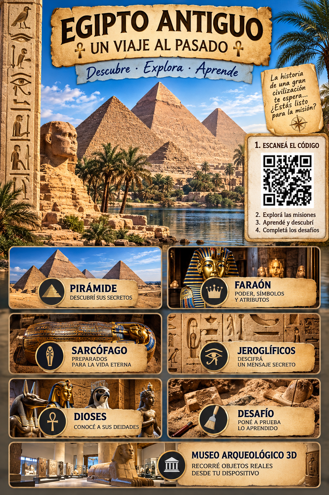
Una expedición por el Antiguo Egipto
Experiencia cinematográfica: activá «♪ Ambiente» y «🎙 Narración» en la barra superior. El navegador requiere que toques estos controles para iniciar el sonido. Podés usar «🔦 Linterna» para explorar con luz.
Explorá las escenas, consultá las láminas y reuní evidencias. No necesitás cámara ni realidad aumentada.
Mi evaluación
Identificación del estudiante
Estos datos identifican tu evaluación. La nota y el detalle de actividades se preparan automáticamente para el formulario de entrega.
Corrección automática por puntos
Cada desafío se corrige en el momento de responder. Primer intento: 10 puntos; segundo: 7; tercero: 4; cuarto o posteriores: 2. Una vez resuelto, su puntaje queda fijo y no puede aumentar repitiendo la respuesta.
El mínimo para aprobar es 224 puntos, equivalentes a nota 6. La nota final es un número entero del 1 al 10. El dibujo libre es una actividad creativa y no recibe una calificación estética.
Importante: completá todas las salas puntuables antes de finalizar la expedición. Al terminar se cierra la evaluación y se fija el resultado definitivo.
📨 Entrega final a la profesora
La aplicación prepara automáticamente tu nota del 1 al 10, el puntaje y los intentos de las 32 actividades. Tocá el botón para abrir el Google Forms con esos datos precargados; después pulsá Enviar dentro del formulario.
El formulario se abre en otra pestaña. Si no aparece, consultá a la profesora. Conservá esta evaluación hasta comprobar que el formulario diga «Se registró tu respuesta».
Vestí al faraón según la situación
Antes de empezar
El faraón era la máxima autoridad de Egipto. Sus coronas y atributos transmitían mensajes sobre el territorio, el poder y su relación con los dioses. No llevaba todos los objetos al mismo tiempo. Investigá las piezas y elegí las que mejor expresan la situación. Las escenas son reconstrucciones didácticas, no fotografías de ceremonias. Antes de elegir, revisá el significado político y territorial de cada objeto: Alto Egipto significa río arriba (sur) y Bajo Egipto, río abajo (norte). El nemes es un tocado de tela, mientras que Hedjet, Deshret y Sejemty son coronas con significados distintos. En las representaciones reales, los atributos se combinaban de diversas maneras.
Lámina del cuadernillo: coronas y atributos
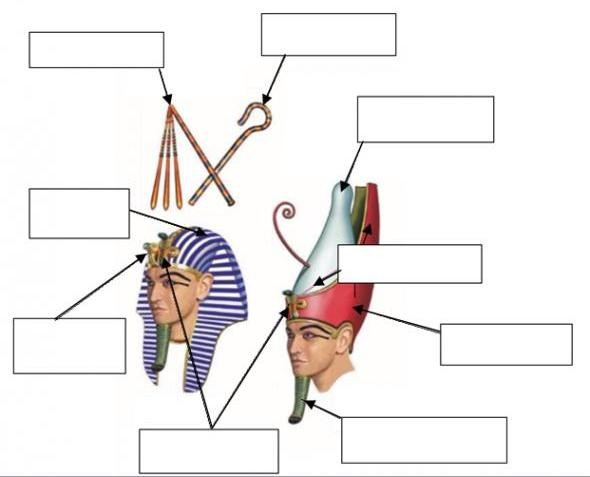
La lámina muestra los atributos y tocados. Es material didáctico del cuadernillo, no una fotografía de cada objeto arqueológico.
Representaciones históricas de los atributos
Compará los objetos de la lámina con representaciones arqueológicas auténticas. El nemes es un tocado de tela, usado en imágenes oficiales del faraón; la doble corona representa la unión de las Dos Tierras. No se puede asignar una única ceremonia obligatoria a cada tocado.
Tu lámina de consulta
Elegí una de las cinco situaciones
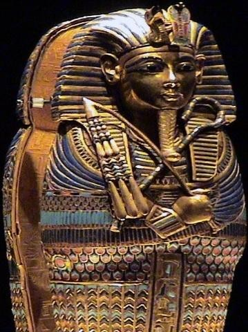
Observá el objeto arqueológico. Tocá una tarjeta y después el casillero «Cabeza» o «Manos». También podés arrastrarla desde la computadora.
Los secretos de las pirámides
Una tumba no es un laberinto inventado
Las pirámides reales fueron monumentos funerarios. Sus estructuras variaron según la época. La Gran Pirámide de Keops tiene pasajes y cámaras que podemos ubicar en un corte esquemático. Algunos nombres tradicionales, como «Cámara de la Reina», no indican con certeza quién estuvo enterrado allí.
Tipos de tumbas · lámina del cuadernillo
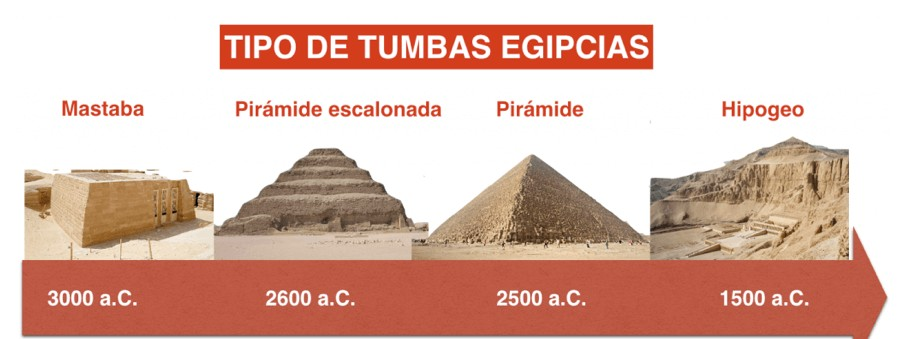
Compará las formas y los períodos. Abu Simbel se estudia aparte: es un templo, no una tumba.
Galería · Las moradas de la eternidad
Observá cómo cambiaron las construcciones. No todas eran tumbas: Abu Simbel era un templo dedicado al culto y a representar el poder de Ramsés II.
Las primeras cuatro imágenes proceden del cuadernillo. La fotografía de Abu Simbel es de Roland Unger (Wikimedia Commons, CC BY-SA); necesita internet. Abu Simbel es un templo, no una tumba.
Plano interactivo de la Gran Pirámide
Tocá cada punto para identificar el espacio y descubrir qué se sabe de él. Es un esquema orientativo, no un plano a escala.
Visitas externas para explorar
Conservamos únicamente la visita de la Gran Pirámide que pudiste abrir. El resto de la investigación se hace dentro de la aplicación con nuestro plano.
Gran Pirámide · visita externa ↗Estos destinos no se verifican en tiempo real desde esta versión. No dependemos de ellos para avanzar.
¿Quién es quién entre los dioses?
Una pista en cada imagen
Los antiguos egipcios eran politeístas: rendían culto a numerosas divinidades. Algunas se representaban con rasgos humanos y animales. Esas formas comunicaban atributos simbólicos. Antes de resolver el misterio, investigá la lámina y tocá las tarjetas para ampliar la información.
Escena egipcia reproducida en el cuadernillo: juicio de Osiris
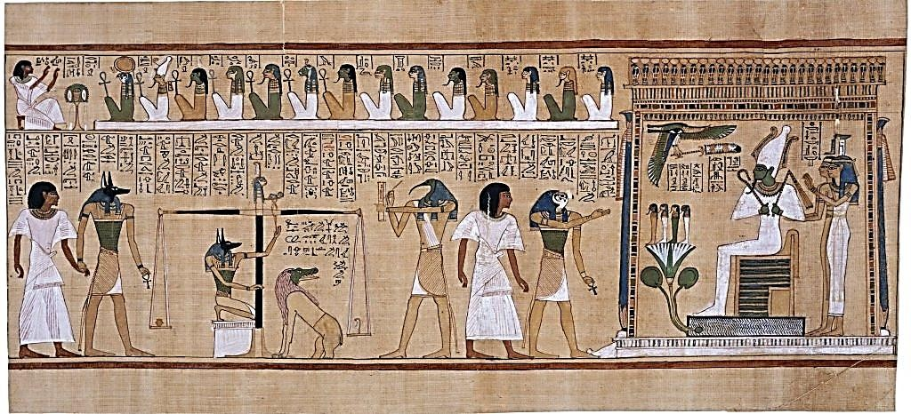
Observá el juicio funerario: identificá la balanza, el escriba divino y el tribunal. No todos los dioses de nuestra lámina aparecen en esta escena. Consultá las tarjetas antes de responder.
Identificá a los dioses en la escena antigua
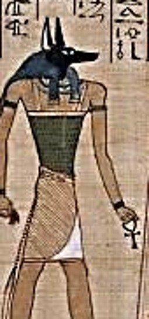
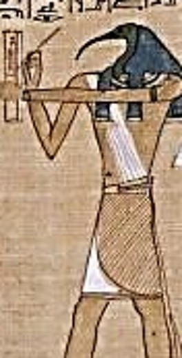
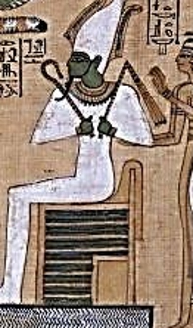
Estas imágenes son recortes de una escena egipcia antigua reproducida en el cuadernillo. Para Ra, Isis, Horus y Amón consultá las colecciones enlazadas: todavía no incorporamos fotografías individuales.
Representaciones arqueológicas de los dioses
Observá imágenes de estatuillas y relieves auténticos, no solamente símbolos del juego. Compará el animal asociado a cada dios y su función.
Abrir imágenes de dioses en el Metropolitan Museum ↗Lámina consultable de divinidades
Las figuras a color son ilustraciones modernas aportadas por la profesora, no fotografías de objetos antiguos. Comparalas con la escena histórica del juicio de Osiris.
Las figuras de esta lámina son ilustraciones modernas de consulta.
La cámara del juicio
Una inscripción describe a un dios que registra el resultado de la pesada del corazón. ¿A cuál deberías buscar? Consultá la lámina antes de responder.
Preparativos para la eternidad
¿Por qué momificaban?
Para muchos antiguos egipcios, conservar el cuerpo formaba parte de la preparación para la vida después de la muerte. La momificación implicaba tareas especializadas y se relacionaba con objetos, ritos y creencias funerarias. Los procedimientos variaron con el tiempo y según las posibilidades de cada familia.
Fuente funeraria del cuadernillo
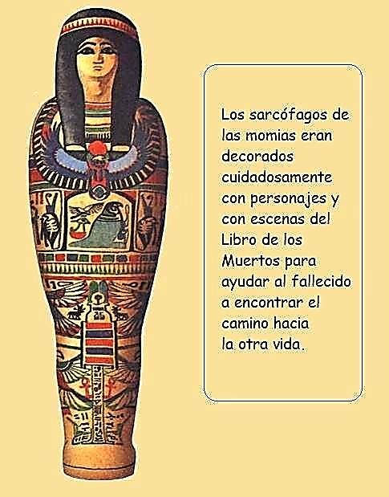
Fuente: cuadernillo de Historia. Observá el objeto: ¿qué información aporta sobre las creencias funerarias?
¿Cómo se preparaba el cuerpo?
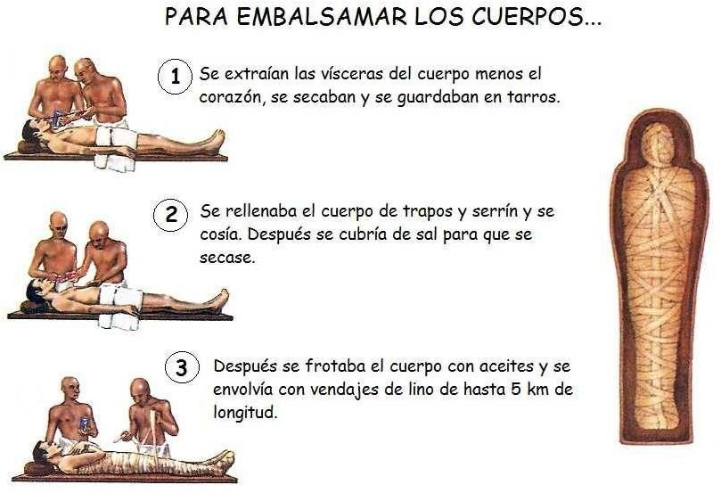
Observá la secuencia de preparación, el uso de sustancias para desecar y el vendado. Los procedimientos variaban según la época y la posición social.
Lámina: objetos y funciones
Exploración · La cámara funeraria a oscuras
Situación: entrás con tu equipo a una cámara funeraria. No podés llevarte los objetos: primero debés observarlos, registrar su función y explicar qué nos cuentan sobre las creencias egipcias.
Cómo jugar: tocá o desplazá la luz por la pared para encontrar los cuatro objetos numerados. Cuando identifiques uno, tocá su número en la lista de abajo. Leé la evidencia y decidí qué función tenía. Podés consultar la lámina anterior en cualquier momento.
Arrastrá el dedo o el mouse por la pared para explorar. Si no podés usar el gesto, tocá directamente los botones de objeto.
Primero observá los materiales y las etapas; después elegí un objeto de la lista para conocer su función y responder.
Investigación: ¿qué evidencias reconociste?
Respondé las cuatro preguntas de los objetos. Cada una se puntúa según los intentos.
Para ver objetos auténticos: vasos canopos en el Metropolitan Museum y ataúdes egipcios del British Museum. Estas páginas requieren internet.
La inscripción escondida
Primero, una distinción importante
Los jeroglíficos egipcios combinaban signos que podían representar sonidos, palabras o ideas y otros que ayudaban a interpretar su significado. Nuestro alfabeto secreto es un juego de sustitución para practicar la observación: no equivale a una traducción auténtica del egipcio antiguo.
Tabla del código de la expedición
Observá una inscripción auténtica
Antes de usar nuestro código, observá los signos de una inscripción real y compará su disposición, figuras y colores. El catálogo del Metropolitan Museum permite explorar piezas con jeroglíficos fotografiados. El sitio es externo y requiere conexión.
Buscá signos repetidos, figuras de aves, líneas de escritura y símbolos. ¿Podrías traducirlos solo con nuestra tabla? ¿Por qué no?
Descifrá el mensaje
Consultá la tabla y escribí en letras de nuestro alfabeto el mensaje secreto. Cada grupo de casillas es una palabra. Hay 5 palabras de 2, 7, 6, 2 y 6 letras, respectivamente. Cada casilla representa una sola letra; la Ñ tiene un signo propio. Si dos signos parecen iguales en tu dispositivo, consultá la clave ampliada.
Probá escribir tu propio mensaje
El desafío del arqueólogo
Tu trabajo es reconstruir el pasado
Los historiadores y arqueólogos no adivinan: interpretan fuentes y comparan evidencias. Leé cada expediente, consultá las láminas de las otras salas y elegí la explicación mejor fundamentada.
El río que transformaba el desierto
Primero, investigá el paisaje
En el valle del Nilo, las crecidas periódicas depositaban limo fértil en las tierras cercanas al río. Los egipcios desarrollaron canales, diques y técnicas para aprovechar el agua. La agricultura sostenía a gran parte de la población y también favorecía el comercio y la recaudación de tributos.
La tierra negra se relacionaba con las zonas cultivables y la tierra roja con el desierto. El Nilo era además una vía de transporte.
Pintura egipcia reproducida en el cuadernillo: agricultura
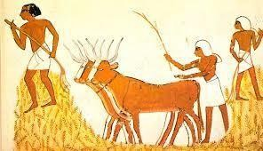
Imagen del cuadernillo de Historia aportado por la profesora. Observá las tareas y vinculalas con las crecidas y el riego.
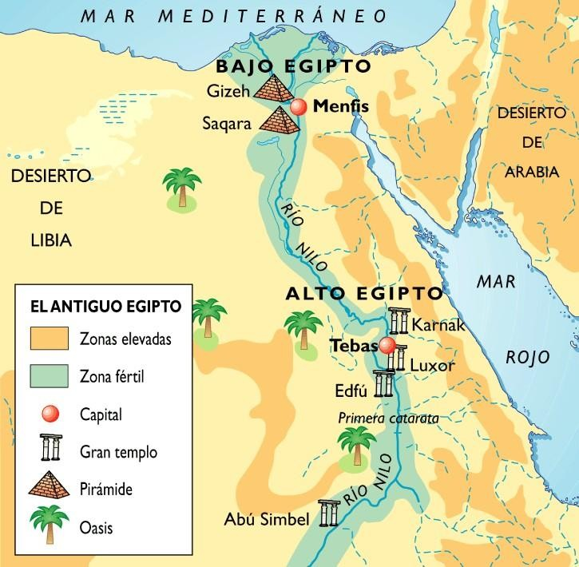
Ubicá el delta y reconocé que Alto Egipto está río arriba, hacia el sur.
Construí la pirámide social
¿Por qué hablamos de una pirámide?
La sociedad egipcia era jerárquica. El faraón concentraba la máxima autoridad. Sacerdotes y altos funcionarios tenían privilegios; los escribas registraban información; comerciantes, artesanos y campesinos desempeñaban funciones fundamentales. También había personas sometidas a servidumbre o esclavitud. Esta pirámide es una simplificación escolar: las condiciones variaban según la época y la ocupación.
Tu lámina de referencia
Ubicá cada grupo desde la cima hasta la base
Arrastrá las tarjetas a cada nivel. En celular también podés tocar una tarjeta y luego el nivel.
Museo arqueológico
¿Qué nos cuenta un objeto?
Una pieza arqueológica es una fuente material. Investigá su forma, materiales, uso y procedencia. No alcanza con decir que es antigua: necesitás explicar qué permite conocer de la sociedad egipcia.
Dos piezas para observar en 3D
Estos modelos están alojados en Sketchfab y necesitan conexión. Pueden fallar si la red escolar bloquea sitios externos.
Ficha de investigación
¿Qué material parece tener? ¿Qué detalles reconocés? ¿Qué información te falta para afirmar para qué se utilizaba?
Investigación: el sarcófago y las creencias funerarias
Observá esta fotografía de un sarcófago reproducido en el cuadernillo. Prestá atención al rostro, el tocado, los brazos cruzados y las insignias que sostiene. No necesitás un modelo 3D para resolver esta investigación.
Explorá las piezas del museo
Tocá cada pieza para abrir su ficha, ampliar la imagen y conocer sus materiales y función. Después respondé la pregunta con tus propias observaciones.
Preguntas del museo · Fuentes materiales
¡Dibujá como un artista egipcio!
¿Por qué dibujaban así?
En muchas pinturas y relieves egipcios, los artistas combinaban distintos puntos de vista para mostrar las partes del cuerpo de una manera reconocible: cabeza y piernas de perfil, ojo y hombros de frente. Es una convención artística, no una falta de habilidad. Había variaciones según las épocas y el tipo de obra.
Primero observá la lámina; después reconstruí una figura y decorá tu propia pared.
Lámina de observación · Taller de pintores
Primero mirá la obra auténtica. Tocá la imagen para ampliarla y buscá estas cuatro pistas: rostro de perfil, ojo visible de frente, hombros de frente y piernas de perfil. No todos los artistas ni todas las épocas seguían exactamente las mismas reglas.
¿Hacia qué lado mira el rostro?
¿Por qué se ve completo aunque la cara esté de perfil?
¿Se ven desde el frente o de costado?
¿Cómo están orientados los pies?
Después construí tu figura con las piezas táctiles y, finalmente, pintá tu propia escena en el muro del taller.
Desafío 1 · Reconstruí la figura
Seleccioná la representación correcta de cada parte del cuerpo. Podés tocar una pieza y luego su casillero, o arrastrarla con el mouse.
Desafío 2 · Pintá tu propia pared
Elegí un color y dibujá una escena inspirada en lo aprendido. Podés agregar un personaje, un barco del Nilo o una ofrenda. Tu dibujo es creativo: no se califica su belleza.
Podés descargar el dibujo y compartirlo con tu profesora. La evaluación automática se basa en la interpretación histórica de las convenciones, no en la calidad del trazo.
Imágenes extraídas del cuadernillo de Historia aportado para este proyecto. Algunas son fotografías de objetos o reproducciones de pinturas antiguas; otras son láminas didácticas. No se presentan como fotografías las ilustraciones modernas.
Versión integral V20 · Expedición y evaluación. Algunas fichas externas requieren internet. Guardá el informe CSV como respaldo de la entrega.
Las puertas del pasado se abren...
Tu expedición está por comenzar.